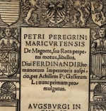
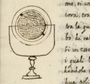

repository
|  |
Petrus Peregrinus: Epistola de magnete (1269)All of the c. 165 images found in manuscript and printed copies of Peregrinus' workVikus viewer for all images
A full transcription of the 1558 edition De magnete, seu Rota perpetui motus, libellusA full transcription of Jean Taisnier's plagiarism De natura magnetis
Latin edition of 1569: transcription, source
English translation of 1575: transcription, source, EEBO manuscript copy of the Latin edition: transcription, source A. Pigafetta's Italian translation Trattato della pietra calamita, et di una rota del moto perpetuo
See link
|
|  |
Leonardo Garzoni: Trattato delli maravigliosi effetti della calamita et delle cause loro (c. 1590)A full transcription of the entire manuscriptAn overview of all images in the workVikus viewer for all images
|